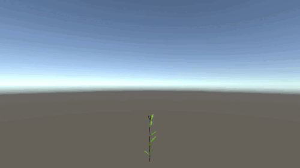
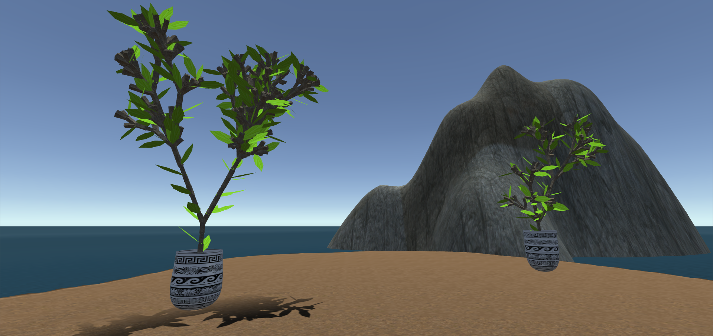

The code for this assignment can be found here.
For this assignment, a simple scene was prepared in Unity. It is composed of:
The same algorithm was used, with the only addition of the UV mapping, which was simply done by mapping a triangle with vertices \(v_0\), \(v_1\), \(v_2\) to \((0, 0)\), \((1, 0)\), \((1, 1)\).
The same algorithm was used, and the UV mapping was simply \((\theta, t)\) for every generated vertex.

The tree is based on the Bushes from Assignment 1, which are generated using a Stochastic L-System on an alphabet with turtle graphics interpretation. The one used there was
\[\begin{array}{cclcl} \omega & : & \mathtt{A} \\ p_0' & : & \mathtt{A} & \xrightarrow{0.34} & \mathtt{[\&FLA]/////[\&FLA]///////[FBA]} \\ p_0'' & : & \mathtt{A} & \xrightarrow{0.33} & \mathtt{[\&LA]/////[\&FLA]///////[FBA]} \\ p_0''' & : & \mathtt{A} & \xrightarrow{0.33} & \mathtt{[\&FLA]/////[\&LA]} \\ p_1 & : & \mathtt{F} & \xrightarrow{} & \mathtt{S/////F} \\ p_2 & : & \mathtt{S} & \xrightarrow{} & \mathtt{FL} \\ p_3 & : & \mathtt{L} & \xrightarrow{} & \mathtt{[ \wedge \wedge \{-f+f+f-|-f+f+f \}]} \\ p_4 & : & \mathtt{B} & \xrightarrow{} & \mathtt{[-Fb]} \end{array}\]
With the alphabet
| Symbol | Action |
|---|---|
F |
Walk forward, drawing the path |
f |
Walk forward, but don’t draw the path |
+ |
Yaw left |
- |
Yaw right |
& |
Pitch down |
^ |
Pitch up |
\ |
Roll left |
/ |
Roll right |
| |
Turn around |
[ |
Push turtle to stack |
] |
Pop turtle from stack |
{ |
Start drawing a polygon |
} |
Finish drawing a polygon |
A |
Dummy symbol |
B |
Dummy symbol |
S |
Dummy symbol |
L |
Dummy symbol |
b |
A flower heading the turtle’s direction, from magnolia.obj |
Since the flower (the b instruction above) is simply a static mesh, we can’t animate it growing. Also, since we want more of a tree than a bush, we add some forward instructions before the A symbol in the axiom. The resulting L-System is
\[\begin{array}{cclcl} \omega & : & \mathtt{0$SA} \\ p_0' & : & \mathtt{A} & \xrightarrow{0.34} & \mathtt{[\&F\%LA]/////[\&F\%LA]///////[F\%A]} \\ p_0'' & : & \mathtt{A} & \xrightarrow{0.33} & \mathtt{[\&LA]/////[\&F\%LA]///////[F\%A]} \\ p_0''' & : & \mathtt{A} & \xrightarrow{0.33} & \mathtt{[\&F\%LA]/////[\&LA]} \\ p_1 & : & \mathtt{F} & \xrightarrow{} & \mathtt{S/////F} \\ p_2 & : & \mathtt{S} & \xrightarrow{} & \mathtt{FL} \\ p_3 & : & \mathtt{L} & \xrightarrow{} & \mathtt{[1 \wedge \wedge \{-f+f+f-|-f+f+f \}]} \\ \end{array}\]
With the alphabet
| Symbol | Action |
|---|---|
F |
Walk forward, drawing the path |
f |
Walk forward, but don’t draw the path |
+ |
Yaw left |
- |
Yaw right |
& |
Pitch down |
^ |
Pitch up |
\ |
Roll left |
/ |
Roll right |
| |
Turn around |
[ |
Push turtle to stack |
] |
Pop turtle from stack |
{ |
Start drawing a polygon |
} |
Finish drawing a polygon |
$ |
Add a face whose normal goes in the opposite direction of the turtle’s direction vector |
% |
Add a face whose normal goes in the same direction as the turtle’s direction vector |
0 |
Set the texture to the tree bark |
1 |
Set the texture to the leaf |
A |
Dummy symbol |
S |
Dummy symbol |
L |
Dummy symbol |
We start by generating a list of instructions for our turtle, as if we were making a static mesh. The growing animation is accomplished by recreating a mesh from the instructions for each frame, but stopping each time after a certain amount of increasing steps.
The parameters necessary are:
Then, to generate a mesh for some frame where we have already progressed \(i\) frames, we do as normal (starting from our origin), with the following exceptions:
Finally, to apply textures, we need an UV mapping to be applied to our mesh’s faces. This way, the rendering engine knows which coordinate of the texture image to apply to that position in the mesh’s surface.
If the tree was static, the mapping would be quite simple; for each face, its vertices \(v_0\), \(v_1\), \(v_2\) and \(v_3\) have UVs \((0, 0)\), \((1, 0)\), \((1, 1)\) and \((0, 1)\), respectively. However, it is growing; if we were to use the same mapping, the textures would move along with the branches, which would look quite strange. Instead, we use the mapping \((0, 0)\), \(((1/n) \min \{m - i, n\}, 0)\), \(((1/n) \min \{m - i, n\}, 1)\), \((0, 1)\).
